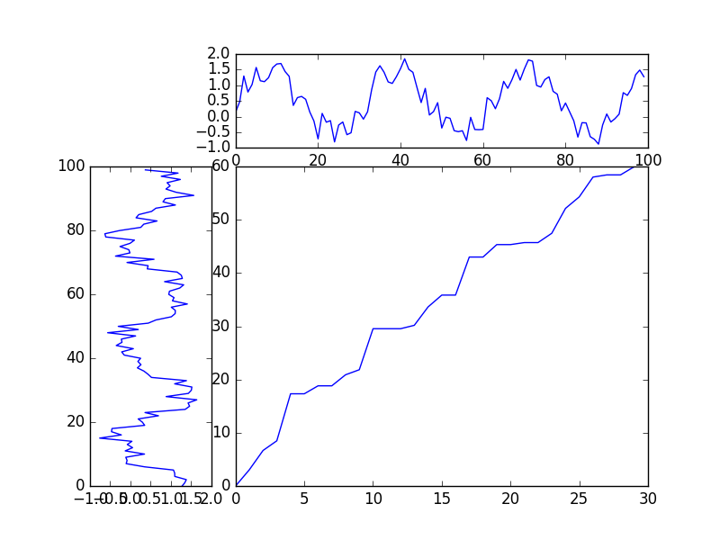

Correlation Analysis in Time Series
Table of Contents
This article is forbidden to publish elsewhere without permission. Contact marcnuth(AT)foxmail.com for permission.
This article aims for providing introduction for some usauslly used alogorithms when handling correlation in time series. This article won't give detail codes example, make sure you understand this before you read.
1 Introductions
1.1 Concepts
Correlation means the two time series, also seems as two variable are related to each other. The relationship could be one of those:
- causal: one variable is the result of another one
- relevant but causal: the two variable are relevant, but not causal.
Causality is easy to understand, which means one results to another one. However, you may feel confused about relevant but not causal, how could that happen?
See following example:
A research found that the sales volume of Coke, together with the number of drowners are usually increasing or decreasing at the same pace.
Take the sales volume of Coke as Variable A, and the number of drowners as Varaiable B. The questions will be:
- Are A and B relevant?
Obviously, yes they are relevant.
- Are A and B causal?
No, they are not causal. It's not reasonable to think drinking too much coke will lead to drown. And after deeper investigation, you will find the truth is that everytime the temprature got increasing, the cokes's sale volume will increase, so do the number of drowners.
Whether two variable are relevant is easier to judge comparing with causal. And generally, when we talk about correlation, we mean the two variable are relevant, but whether they are causal, we don't know.
1.2 Applications
1.2.1 Similarity Detection
Similarity is a kind of correlation, and it's a special case.
Suppose this situation:
Providing a lot of time series with one target time series, we need find the similar series as the target one.
2 TODO Algorithms
2.1 DTW
2.1.1 Introduction
DTW1 is for Dynamic time wrapping algorithm. DTW could mesure the similarity of two sequence, and it could sussfully handle following situations:
- Different scale of two series
- Time shifting on two series
- Different length of two input series
DTW's time complexity is \(O(n^2)\). The most popular application of DTW is in Voice Recognization, Music Recognization.
2.1.2 Principles
Preconditions:
Suppose there are two sequences S1 and S2, and:
- S1 = (a1, a2, a3, a4, …, an)
- S2 = (b1, b2, b3, b4, …, bm)
Which means:
- The length of S1 is n, and the length of S2 is m
- S1 is consits of point a1, a2 …, S2 is consits of point b1, b2 ….
- Generally ai/bi could be a number or a vector
Details:
Generally, the easiest way to compare two series is make both of them have the same length and compared each point. There are some methods to make them have the same length, such as cuting longer one, or scale the shorter one up, etc. However, this kinds of method will lose some features and cannot handling the shifting or scale in a good way, which performs bad in reality.
The way DTW implements is to calcuate a matrix of the two series. As the length of series are n and m respectively, so the matrix's size will be n*m. In the matrix, every element Value(i, j) means the distance between ai(in S1) and bj(in S2). Mathmaticly: $$ Value_{i,j} = Distance(a_i, b_j)$$ In it, distance could be the Euclidean Distance, which is $$ Distance(x, y) = (x - y)^2 $$
As we could see in the expression, the less distance is, the more similar the two values are.
From the view of the whole matrix, we can find out a path in the matrix which goes from (1,1) to (n,m), and if this path has the minimized cumulative distances, we could take the minimized cumulative distances as the Similarity Level. In real application, if we have serveral series, we could use DTW to find the most similar one according to this.
As you can see in the following graph, the left and top lines are the two series, and our target is to find the path like the one in the right-bottom.

So, how to find out the path?
Let's give the path a defination like this: $$path = (w_1, w_2, w_3, ..., w_k), max(m,n) \le k < m+n-1$$ In it, $$ w_i = v_{p,q}$$ And the cumulative distance(D) of the path could be denoted as: $$D = \sum_{k=1}^K(w_k)$$
\(v_{p,q}\) is the element of the matrix, and i,p,q does not have any relations, we just give some symbols here for convenience.
Next, let's continue to talk about the path, it's noted that the path should satisfy following conditions:
- Boundary: the path should start at (1,1), and ends at (n,m), which is, \(w_1 = v_{1,1}\) and \(w_k =v_{n,m}\)
- Contiunity&Monotonicity: for any \(w_{p-1}=v_{a_1,b_1}\) and \(w_p=v_{a_2,b_2}\), \(w_p\) should be the (up/right/up-right)neighbour elment of \(w_{p-1}\), that's to say, \(0 \le a_2 - a_1 \le 1\) and \(0 \le b_2 - b_1 \le 1\).
There are still a lot paths who satisfy the above conditions, the minimized cumulative distance, the one we want could be denoted as: $$DTW(S1, S2) = min(D_i)$$
To make up for longer distance, the above equation could be improved as: $$DTW(S1, S2) = min(\frac{\sqrt{D_i}}{K})$$
This equation could be figured out with dynamic programing.
Brief Summary:
As we can see, DTW aims to find an path whose cumulative distance is smallest. In fact, different path stands for different "scale up/down" on part of the series, which make the comparesion more flexible. Moreover, once we find the smallest distance, we could get the "similarity level" of the two series, which allows us to decide they are similar or not.
2.2 TODO Fast DTW
2.2.1 Introduction
DTW is an excellent algorithm for validating the similarity, but it's a time-consuming algorithm(\(O(m*n)\)) which makes that bad for bussiness application.
Usually in bussiness application, the series to compare are not just two but plenty of pairs. Suppose given one target series, and we are going to find the similar series from the left k serries, the time complexity would be \(O(m*n*k)\).
There are plenty of methods to speed up original DTW algorithm, I will list some popular ones in this part. And those DTW algorithms are improved with different strategy and views, which may inspire you.
2.2.2 Speed-Up: Decrease the search space
As we know there is a cost matrix in original DTW and there have already some constriants on it to limit the search space. The constriants could be found in Section DTW. Following graph illustrate the search space, which is occupied by black color:
As you could see in the above graph, the rectangle stands for the cost matrix, and the black blocks means the search space to calculate best path.
- in Original DTW algorithm, we have to calculate the whole cost matrix to find the best path.
- with Optimize 1 and Optimize 2, the search space is decreased, so the DTW could be speed up.
Optimize 1 and Optimize 2 is mentioned in Paper2, read that paper if you are interested in how it works. But please noted that: the two optimization do limit the search space and speed up the DTW, but it does not guarantee for finding out the best path.
2.2.3 Speed-Up: Data Abstraction
This kind of method takes another view to looked into the path-self. The core thought of this method is to simply(sample) the series first, find one best path and then mapped it to the orignal matrix.
See following graph for illustration:
As you can see, this method focus on finding a best path on a lower resolution(sampled) cost matrix, and then maps the path to the original matrix. This do speed up the DTW, but the disadvantage is as the previous one, it does not guarantee the result is the best path.
Read more information about this method, please refer to Paper2.
2.2.4 TODO Speed-Up: Indexing
2.2.5 Integrated Algorithm
In paper2, an integrated methods are provided for DTW algorithm.